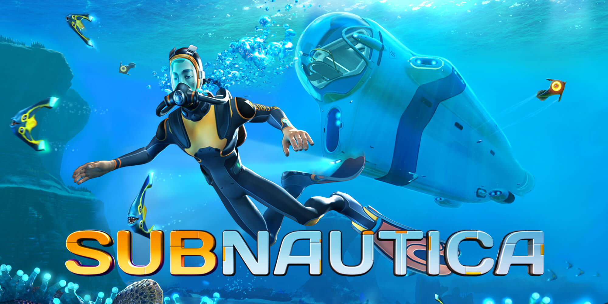
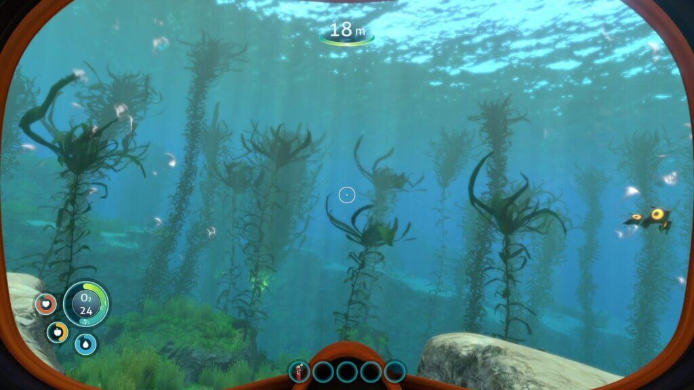
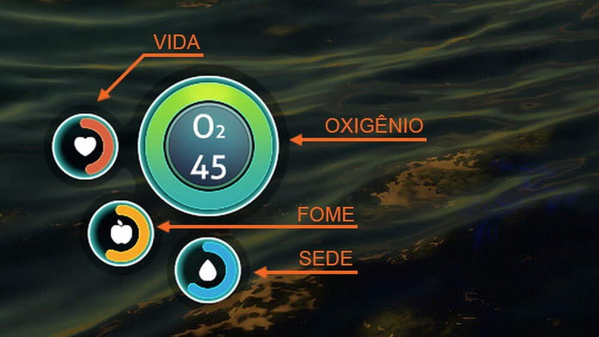
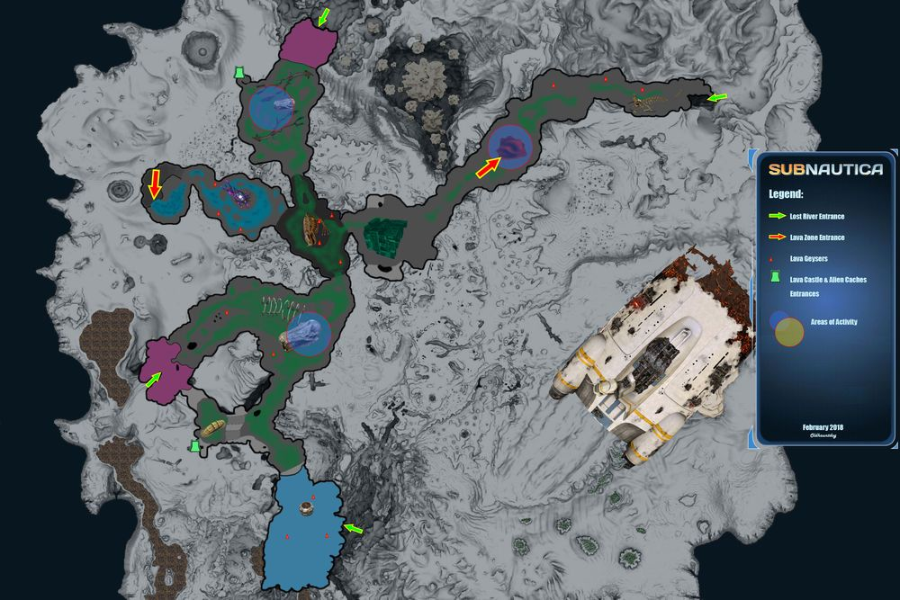
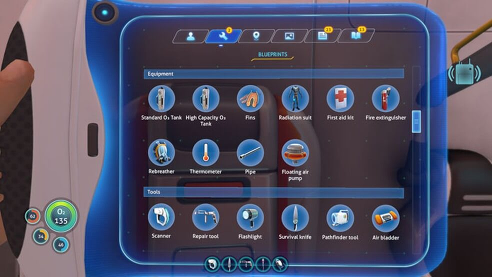

O que é subnautica
Subnautica é um jogo de aventura e exploração para PC e Xbox One e ps4, onde criaturas e tecnologias alienígenas habitam o fundo do mar. No game, o jogador literalmente mergulha nas profundezas do desconhecido, em um mundo repleto de corais, recursos e mistérios. Confira dicas e veja como das os primeiros passos neste jogo de sobrevivência.

O básico para sobreviver
Subnautica é um jogo focado na sobrevivência. Ou seja, subentende-se que o principal objetivo seja a exploração, caça e coleta de recursos. Entretanto, há mais para se descobrir do que atacar, além de mistérios que fazem a parte alienígena de Subnautica ser realmente interessante.

O progresso é medido pelas tecnologias (blueprints) descobertas. Elas estão dispersas no mar, em partes naufragadas, corais ou perto de criaturas desconhecidas – e, às vezes, bem agressivas. Usando equipamentos avançados é possível explorar profundidades maiores,biomas com temperaturas elevadas e águas envenenadas pela radiação.
Funções vitais
Subnautica não é diferente de outros jogos de sobrevivência. Na parte lateral da tela, temos as funções básicas do personagem – vida, oxigênio, fome e sede – que devem ser mantidas a qualquer custo. A vida é recuperada com o First Aid Kit. O item pode ser fabricado ou pego de graça na estação do Medical Kit Fabricator a cada 30 minutos.

Fome e sede são saciados com comida e líquidos de origem animal. Não é necessário um item especial, como uma rede para pescá-los. Basta chegar perto do peixe e clicar para pegá-lo. O oxigênio é o mais importante, pois além de mantê-lo vivo embaixo d’água, também mede a distância que você pode explorar. Ou seja, quanto maior for a quantidade de oxigênio, mais tempo você poderá permanecer dentro do mar.
Biomas (biomes)
Subnautica possui diversos biomas (biomes). Cada região tem sua própria fauna e flora que difere das demais, além de recursos únicos e necessários para a sua jornada. O local onde você inicia o jogo é chamado de Safe Shallows, uma região relativamente segura e com animais passivos, ótima para procurar por comida e matéria-prima.

A navegação por fundo do mar pode ser um tanto confusa, especialmente no começo. Enquanto você não possui veículos, use a localização da Aurora – que se encontra ao leste – para guiar-se no mapa. Mais para frente no jogo, você poderá criar um item chamado Beacon que é usado para marcar pontos específicos no fundo do mar.
Tecnologias (blueprints)
As tecnologias são parte fundamental do progresso e da história de Subnautica. O seu papel, como sobrevivente, é buscar por qualquer recurso que o possibilite viver e, futuramente, escapar do local. No começo, você começará com algumas receitas (blueprints) para a fabricação de itens básicos, como tanque de oxigênio e scanner.

Como dito antes, ao longo da jornada você encontrará tecnologias aprimoradas, incluindo upgrades necessários para explorar biomas complexos e de difícil acesso. A chave para avançar é entender a ordem de montagem dos itens. Um item precisará de outro para ser criado.
Os primeiros passos
Ao ser ejetado da nave Aurora, apague o fogo no Lifepod e interaja com os painéis. Abra o storage container, guarde o extintor e pegue um Flare e uma guarrafa de água (Filtered water). Você pode guardar as barras (Nutrient blocks) para mais tarde. Pegue também um First Aid Kit no Medic Kit Fabricator, um painel ao lado do storage container.
Todos os itens, incluindo as ferramentas, são criados no Fabricator.

Em seguida, saia do Lifepod pela escotilha no chão ou escada para o topo. Antes de começar a exploração, pegue um pouco de comida e água. É prático ter uma reserva de alimentos e líquidos para qualquer eventualidade. Contudo, não faça um estoque grande, pois os alimentos têm prazo de validade – e você precisará de espaço no inventário.

Capture o Pepper e o Bladderfish. O primeiro servirá de comida e o segundo se transformará em água. Você provavelmente encontrará algumas rochas pelo caminho chamadas de Limestone. Quebre-as para coletar Titanium e Copper Ore, material para fabricar o Scanner, tanque de oxigênio e Fins, três itens muito importantes para o começo do jogo.
Materiais
- Filtered water:1x Bladderfish
- Cooked Pepper:1x Pepper
Standard O2 Tank, Scanner e Fins
O primeiro item que deve ser fabricado é o tanque de oxigênio (Standard O2 Tank). Desta maneira, você permanecerá por mais tempo embaixo d'água. Use o Titanium encontrado nas Limestones ou procure por Metal Salvage, pedaços soltos de metal que podem ser refinados em matéria-prima no Fabricator. Eles fornecem três Titanium por vez.

A segunda ferramenta mais importante é o Scanner. Com esse objeto você registrará os blueprints e irá catalogar a vida marina extraterrestres.
A receita do item pede Titanium e uma bateria (Battery). Pegue dois Acid Mushroom – cogumelos de cor lilás encontrados perto do Lifepod – e um Copper Ore para criá-la no Fabricator. Depois use-a junto com o outro material para montar o Scanner. Coloque-o na barra inferior de atalhos.